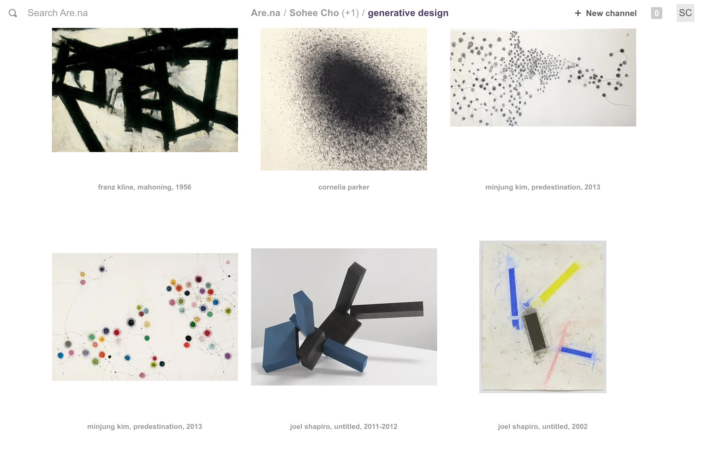
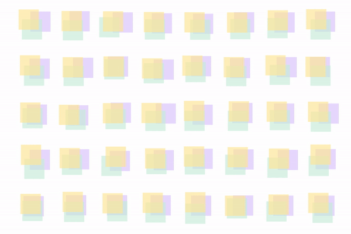
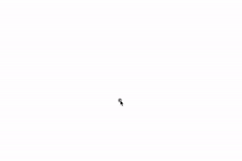
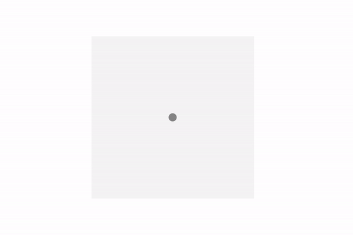
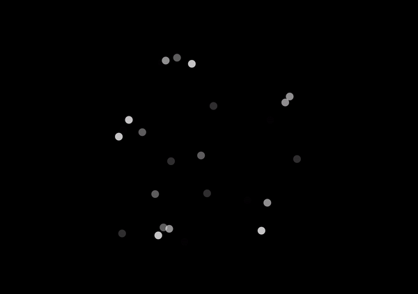
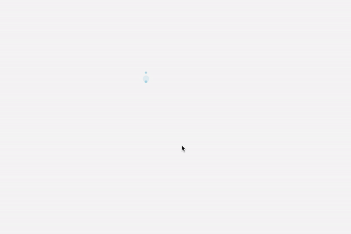
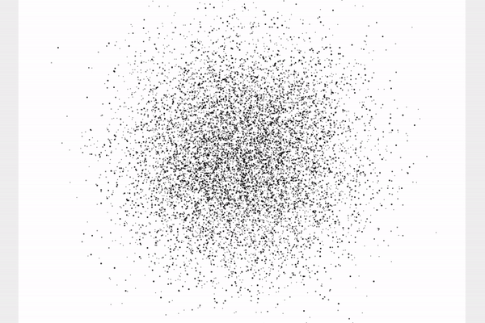
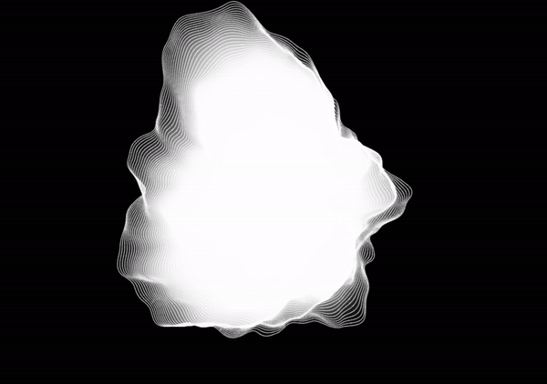

Creative Coding | Data Visualization | Generative Design
uncertainty sketches is part of the Visualizing Uncertainty research project led by Aaron Hill at Parsons School of Design. The interdisciplinary project draws inspiration from the fine arts to think about new ways of representing uncertainty in data visualization. My group was tasked with creating the design moodboard and initial sketches.
       This project was created in collaboration with Benny Zhang.